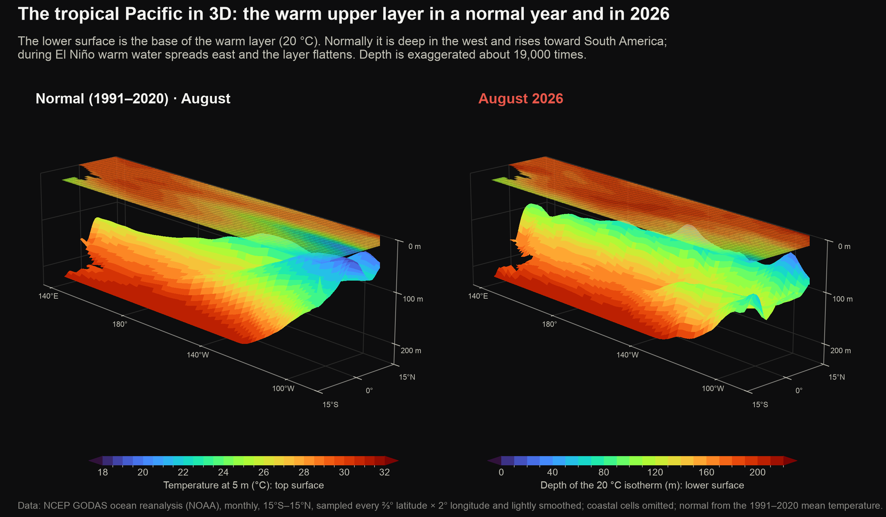
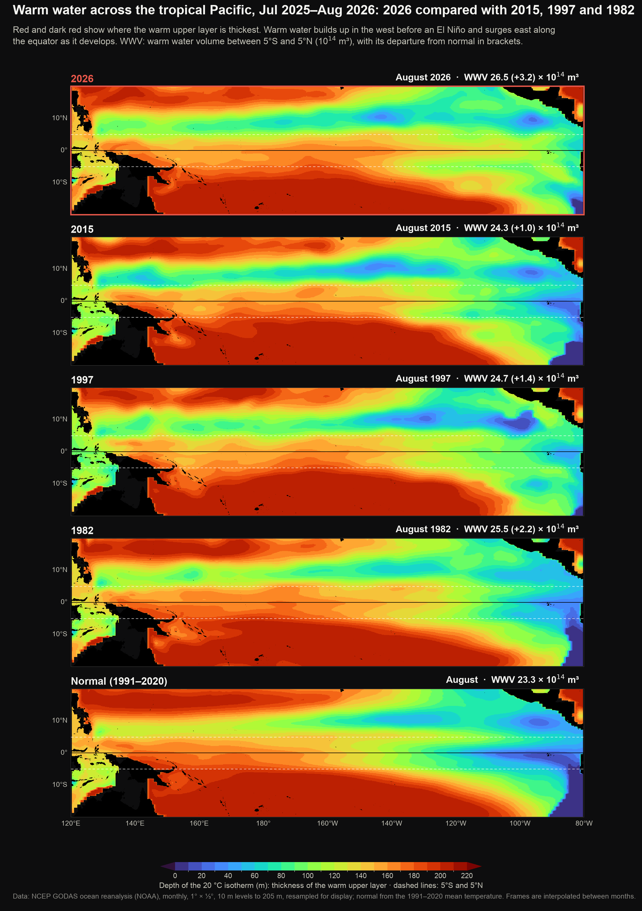
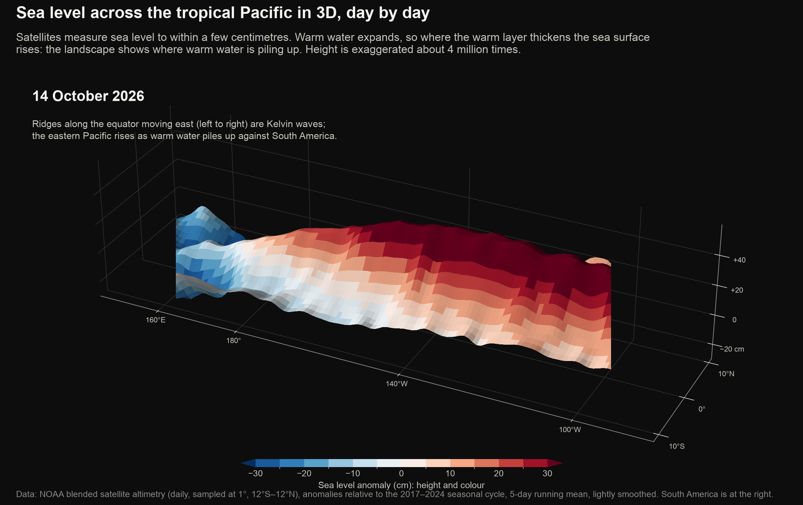
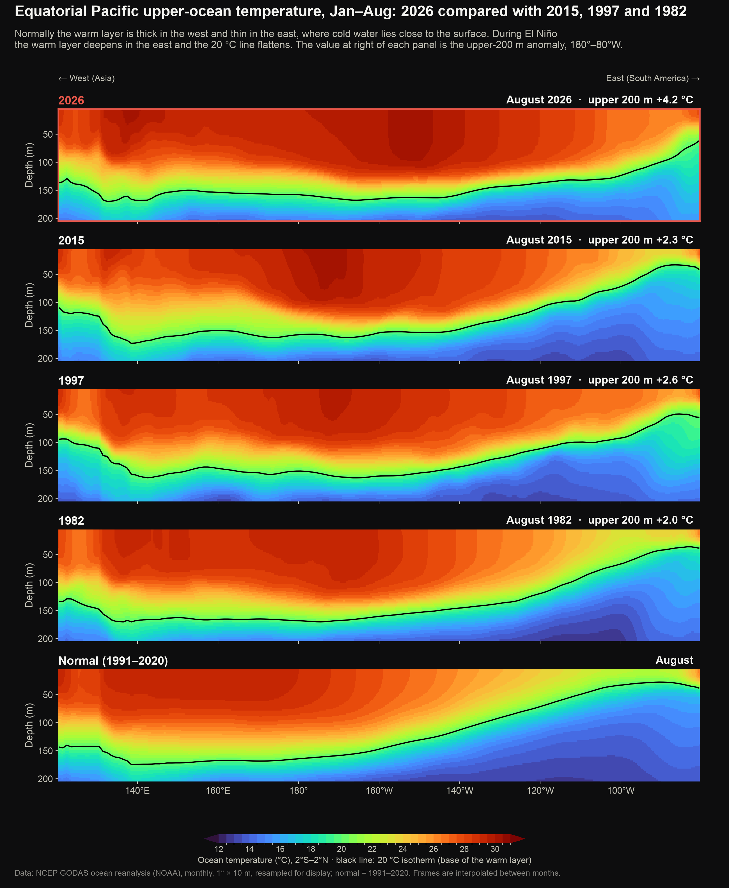
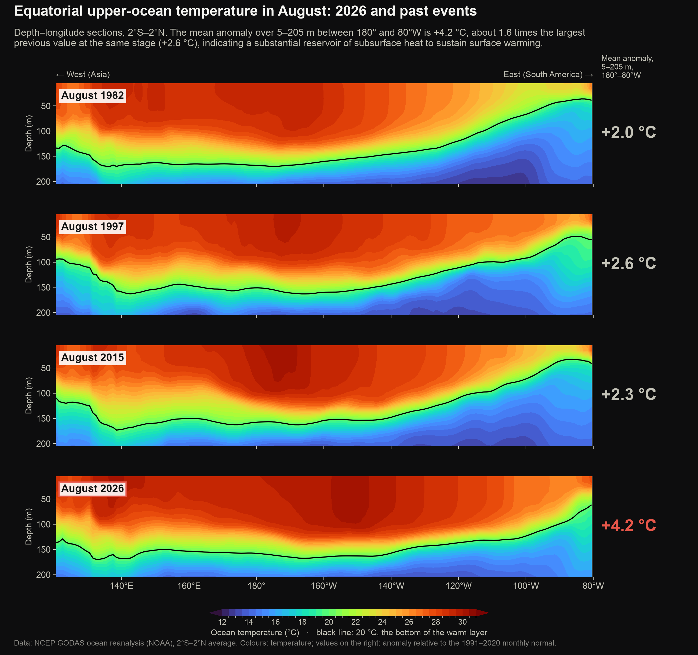
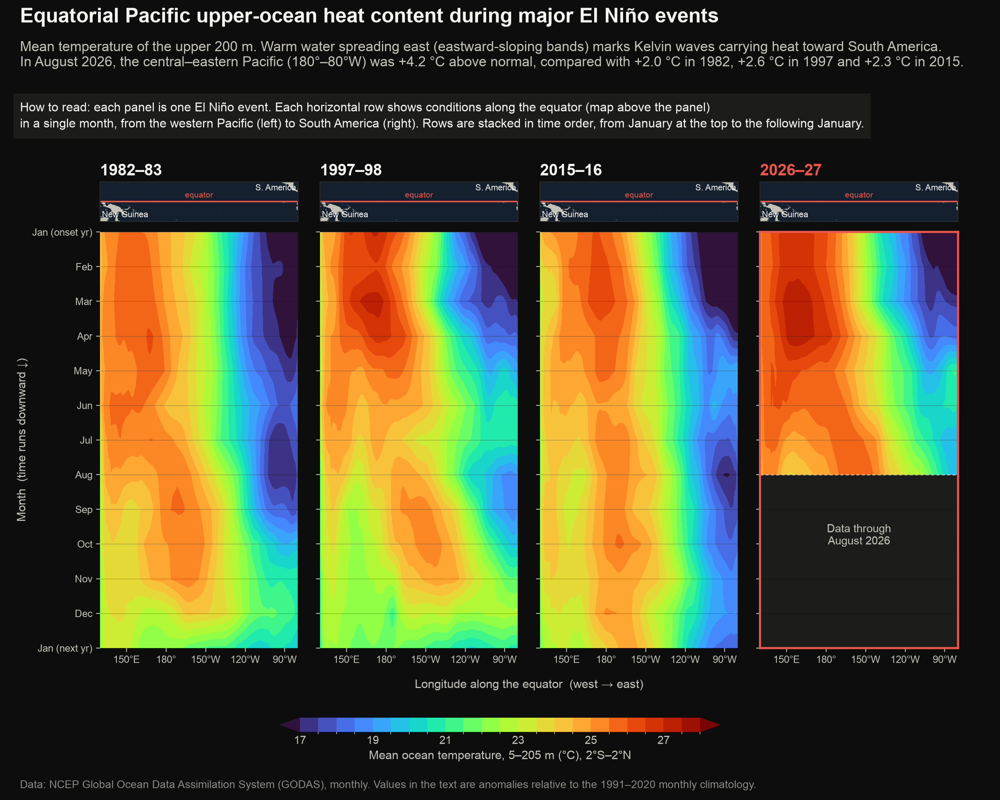

El Niño 2026–27 · Below the surface
Below the surface: the warm water behind the 2026–27 El Niño
Most of an El Niño (A periodic warming of the central and eastern equatorial Pacific Ocean, with related changes in winds and rainfall, recurring every two to seven years.)'s heat is stored below the sea surface. These figures follow the warm water in the upper few hundred metres of the equatorial Pacific: in 3D, by temperature layer and as Kelvin waves (Pulses of warm water that travel east along the equator beneath the surface, crossing the Pacific in about two months.), using NOAA's ocean reanalysis (A best estimate of past ocean or weather conditions, made by combining observations with a numerical model.) and daily satellite sea level.
The warm layer in 3D
Rotatable and animated 3D views of the upper ocean, built from NOAA's ocean reanalysis.
In a normal year the warm layer is thin near South America; in 2026 it has thickened there, so the cold water that normally cools the eastern Pacific stays far below the surface.

How to read this figure
Each block is the tropical Pacific seen from the south-east, with Asia at the far left and South America at the right. The coloured lower surface is the base of the warm layer: red where it lies deep, blue where it is close to the surface. The thin top sheet is the sea surface temperature.
Switch to Hottest water and compare 2026 with Normal: the body of water above 28 °C is far larger in 2026 and reaches much farther east.
Rotatable 3D model of the tropical Pacific built from NOAA ocean data.
How to read this figure
Load the view, then drag to rotate and use + and − to zoom; the angle you choose is kept while the months play. Choose a view and a year above the model, and use the slider or play button to move through the months. The opacity sliders below fade or hide each layer, so you can look inside.
Warm water building up
How much warm water is stored in the equatorial Pacific, and how much of it is the hottest water, above 28 °C.
More warm water is stored along the equator in 2026 than at the same stage of 2015, 1997 or 1982.

How to read this figure
Each map shows how far below the surface the warm upper layer reaches (the depth of the 20 °C isotherm). Dark red means warm water extends deep; blue means the warm layer is thin. Watch the band between the dashed lines: during El Niño the red area spreads east along the equator.
The hottest water has grown the most: the volume warmer than 28 °C is far above normal and above 2015, 1997 and 1982 at the same stage.

How to read this figure
Each slice runs along the equator from Asia (left) to South America (right) and from 5 m down to 200 m. Colours mark temperature layers, from below 20 °C (dark blue) to above 29 °C (dark red). The dashed lines show where 20 °C and 28 °C normally lie; red reaching below or east of them means more warm water than usual. The bar beside each slice adds up the volume in each layer, warmest on the left.
Kelvin waves
Pulses of warm water that cross the Pacific beneath the surface, followed in daily satellite sea level.
A series of Kelvin waves has carried warm water from the western Pacific to South America since late 2025, each one adding to the warm layer in the east.
![Animated infographic of Kelvin waves along the equatorial Pacific from July 2025 to 14 October 2026, from daily satellite sea level. 6 Kelvin waves crossed the Pacific: wave 1 left 150°E on 7 December and reached 95°W on 28 January 2026 at 2.8 m/s; wave 2 left 150°E on 24 January and reached 95°W on 14 March 2026 at 3.0 m/s; wave 3 left 150°E on 20 March and reached 95°W on 7 May 2026 at 3.0 m/s; wave 4 left 150°E on 12 April and reached 95°W on 27 May 2026 at 3.2 m/s; wave 5 left 150°E on 13 July and reached 95°W on 29 August 2026 at 3.1 m/s; wave 6 left 150°E on 1 September and reached 95°W on 13 October 2026 at 3.4 m/s. Sea level east of 130°W rose from -1 cm to +46 cm over the period.](img/05_anim_kelvin.png)
How to read this figure
Top: total sea level along the equator on the day shown, rising in the east as warm water piles up. Bottom: the Kelvin-wave signal day by day, with time running down the page, so each wave is a red streak slanting down to the right. Yellow dashed lines trace each wave once it has crossed the Pacific.
Sea level along the equator in the eastern Pacific has risen by about 40 cm since mid-2025 as warm water piled up, with Kelvin-wave ridges arriving one after another.

How to read this figure
The landscape is the tropical Pacific seen from the south, with Asia to the left and South America to the right; its height and colour are the sea level anomaly (The difference from normal (the 1991–2020 average) for the same time of year; +2 °C means 2 °C warmer than usual.). Watch the red ridge along the equator: bumps that move from left to right are Kelvin waves, and the ridge grows as warm water accumulates in the east.
Along the equator
Vertical slices through the ocean along the equator, from Asia to South America.
In 2026 the 20 °C line is nearly flat across the Pacific: the cold water that normally lies close to the surface in the east has been pushed down.

How to read this figure
Each panel is a vertical slice through the ocean along the equator, from Asia (left) to South America (right) and from the surface (top) to 200 m depth (bottom). Warm colours above the black line are the warm upper layer. Normally the line rises toward the east; during El Niño it flattens.
The upper ocean holds far more extra heat in 2026 than in any past very strong event at the same stage.

How to read this figure
Each panel is a vertical slice along the equator, from Asia (left) to South America (right), down to 200 m. Colours show how much warmer (red) or cooler (blue) than normal the water is.
Warm water spreading east beneath the surface has built a larger heat reservoir in 2026 than in past very strong events.

How to read this figure
Time runs down the page, one row per month; position runs left to right from the western Pacific to South America. Colours show the average temperature anomaly of the top 200 m. Diagonal streaks running down and to the right are Kelvin waves: pulses of warm water that cross the Pacific beneath the surface in about two months.